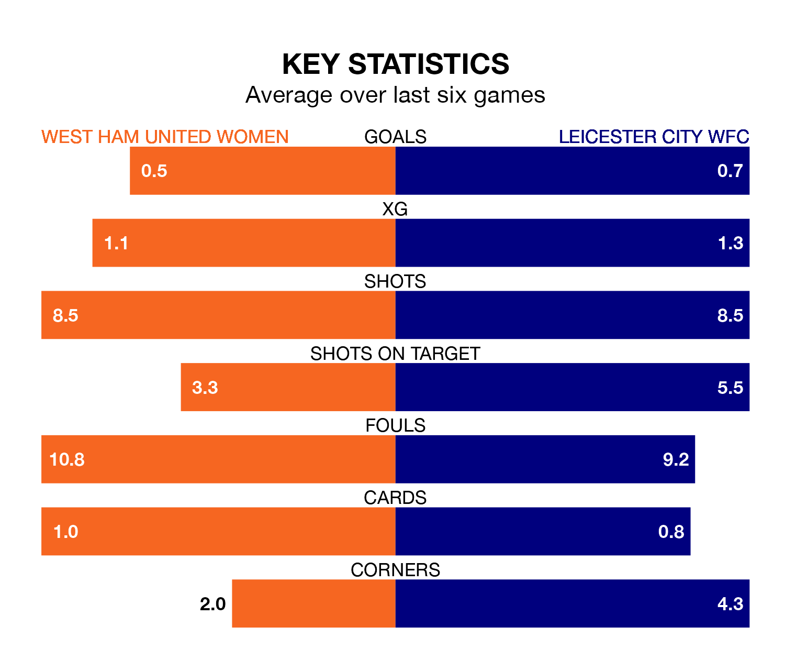

Sunday's match at the Chigwell Construction Stadium sees two relegation candidates play each other, as 11th-ranked West Ham United Women host 10th-placed Leicester City WFC.
West Ham United have picked up 14 points from their first 14 FA Women's Super League games, with three wins and five draws.
That is three points less than Leicester City WFC have collected, having won four and drawn five.
West Ham United are in bad form in the FA Women's Super League, with no wins and three draws from their last six games.
But with no wins and a draw over that period, Leicester City WFC's form is even worse – they have taken one point from 18, compared to the Hammers' three.
With 18 goals in 20 games so far this season, the home team are the league's joint-second-lowest scorers with 0.9 goals per game. And they are conceding more than average, letting in 41 goals at a rate of 2.0 per game.
The visitors are also below average scorers, with 1.2 goals per game, compared to a league average of 1.6. They have conceded 2.0 goals per game.
In the last five years, West Ham United and Leicester City WFC have played each other on five occasions. West Ham United won three of them, Leicester City WFC one, and they drew once.
On average, the Hammers scored 1.6 goals and Leicester City WFC 1.0 in those matches.
Their last meeting was on December 17, when they played out a 1-1 draw.
West Ham United's last match was on April 28, a 1-1 draw against Aston Villa Women, with Shannon Cooke getting the goal for the Hammers.
Leicester City WFC lost 1-0 against Manchester United Women last time out, also on April 28.
Updated: 10:44 (UTC), 30/04/24